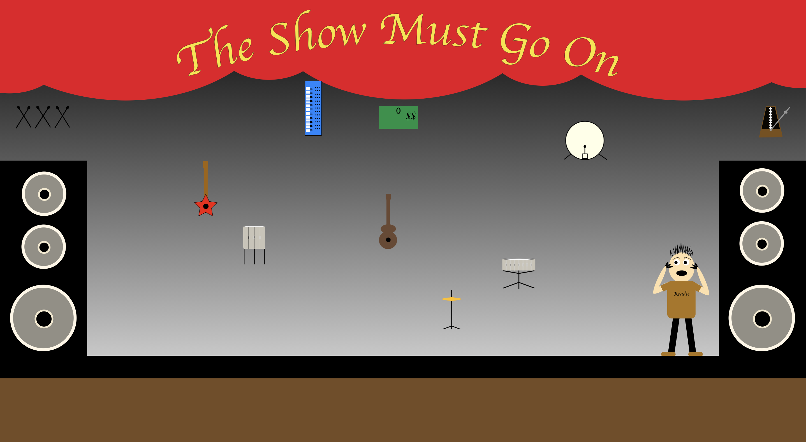

Portfolio Eksamen
Portfolio
Grunddlæggende web
Grundlæggende web
På dette tema lærte jeg om grundprincipperne bag opbygningen af en hjemmeside via HTML5 og CSS. Jeg lærte først at opbygge strukturen på sitet ved hjælp af wireframes og styletiles og derefter sætte det op i layoutdiagram. Selve koden lærte jeg at gøre responsiv, så sitet kan tilapsse sig diverse medie formater ved hjælp af @media queries. Derudover tilegnede jeg mig viden om basal redigering af digitalt indhold til sitet, fx billede redigering i Photoshop. Det hele resulterede i, at vi lavede en hjemmeside med selvvalgt emne, men udfra en given ramme ift grid mm. Designet blev lavet ud fra en given stilart, som blev tildelt i starten af temaet - her havde jeg "Flat art"
Grunddlæggende UX
Idé, pitch og prototype
På dette tema tilegnede jeg mig viden indenfor research, analyse, indholdsproduktion og prototyping. Jeg lærte at indsamle viden og forbrugeren af sitet, og derved tilrettelægge inholdet bedst muligt efter forbrugerens vaner og ønsker. Derudover dokumenterede jeg min design process løbende, med de ændringer jeg lavede, på baggrund af den feedback jeg fik i mine diverse surveys. Alt dette kulminerede i et design af en prototype, af en webshop, som solgte t-shirts. Jeg valgt at lave shoppen "STS - Sustainable t-shirts" - en webshop med omtanke for miljøet, både iform af materialer, transport og selve sitet. Du finder både idé, pitch og protypen nedenfor.
Five Act Interview
Ide til prototype
Pitch Deck
Prototype før feedback
Prototype efter feedback
Grundlæggende animation
Produktion af eget spil
På dette tema tilegnede jeg mig viden indenfor skitsering og udvikling af ide og visuelt koncept. Dette var med heblik på at udvikle vores eget spil, med dertilhørende elementer - elementer som baggrunde, UI-elementer og figurer med mere. Alt sammen tegnet i Adobe Illustrator. Det var også på dette tema jeg for første gang stiftede bekendtskab med javascript. Vi brugte javascript til animation af de elementer vi forinden havde designet i Illustrator. Jeg valgte, men musikalske baggrung i baggagen at lave spillet "The Show Must Go On" som handler om, du skal hjælpe en stakkels roadie med at finde et forlagt trommesæt, så bandet kan gå på scenen til planlagt tid. Du finder både designdokumentation og link til selve spillet herunder.
Assetliste og dokumentation
The Show Must Go On
 Link til spilGrundlæggende indhold
Pilotprojekt
På dette tema tilegenede jeg mig viden indenfor, hvad der overordnet er/skal være på en hjemmeside, hvorfor og hvordan man tilrettelægger det. Jeg lærte at redigere billeder, video og lyd. Billeder med fotostil og farver i baghovedet, som ophavsret og formål med det digitale indhold. Alt sammen med henbilk på, at kunne vurdere hvilke teknologier der skulle anvendes til den givne præsentation, for bedst mulig formidling. Vi startede temaet med at skulle redigere et videointerview, med klip som allerede var filmet. Filmen skulle sammensættes af main clips og b-rolls, en øvelse som skulle give os den basale viden for videoredigering. Herefter skulle vi selv ud og filme et interview, hvor vi i min gruppe valgt Jonas, madblogger hos "Grøn smag". Videoen skulle have forskellige framings samt ekstern optaget lyd og musik.
Redesign
Hernæst skulle vi i grupper lave et redesign af en hjemmeside for et selvvagt firma. Dette med alle de redskaber, vi har lært op igennem semestret, i baggagen. I vores gruppe valgte vi Aurelia Kaffebar - en hyggelig cafe med sans for hygge, personlighed og god smag, men dog med en kedelig hjemmeside. Vi researchede på, hvordan vi skulle lave deignet via serveys og diverse tests, og opbyggede derefter en hjemmeside fra bunden via HTML, CSS og Javacript. Alt dette gjort ud fra selvlavede styletiles og wireframes.